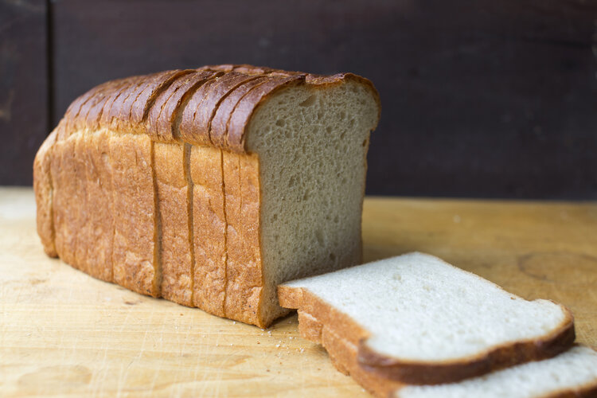

Classic Sandwich Loaf

Ingredients
- 1 cup (240ml) water,
warmed to about 110 degrees.
- 1/4 cup (60ml) whole milk,
warmed to about 110 degrees.
- 2 and 1/4 tsp (7g) Active-Dry yeast
- 2 Tbsp (25g) granulated sugar
- 4 Tbsp (1/4 cup; 60 g) unsalted butter,
softened to room temperature
- 3 and 1/4 cups (406g) all-purpose flour,
or bread flour(spoon and leveled)
Steps
- Prepare the dough: Whisk the warm water,
warm milk, yeast, and sugar together in the bowl of your
stand mixer fitted with a dough hook or paddle attachment.
Cover and allow to sit for 5 minutes.
- Add the butter, salt, and 1 cup flour. Beat on low speed
for 30 seconds, scrape down the sides of the bowl with a rubber
spatula, then add another cup of flour. Beat on medium speed
until relatively incorporated (there may still be chunks of butter)
Add the remaining flour and beat on medium speed until the dough
comes together and pulls away from the sides of the bowl, about 2 minutes.
*If you don't have a stand mixer, you can mix this dough with a large
wooden spoon.
- Kneed the dough: Keep the dough in the mixer and beat
for and additional 3 minutes or knead by hand on a lightly floured surface
for 3 minutes.
- 1st Rise: Lightly grease a large bowl with olive Oil
or nonstick spray. Place the dough in the bowl, turning it to
coat all sides in the oil. Cover the boil with aluminum foil, plastic wrap,
or a clean kitchen towel, Allow the dough to rise in a relatively warm environment
for 1-2 hjours or until double in size.
- Grease a 9x5 loaf pan
- Shape the bread: When the dough is ready, punch
it down to release the air. Lightly flour a work surface, your hands,
and a rolling pin. Roll the dough out into a large rectangle, about 8x15
inches. It does not have to be perfect- in fact, it will probably
be rounded on the edges. That's ok! Roll it up into an 8 inch log and place
in prepared loaf pan.
- 2nd Rise: Cover shaped loaf with aluminum foil, plastic wrap,
or a clean kitchen towel. Allow to rise until it's about 1 inch about
top of the pan, about 1 hour.
- Adjust oven rack to a lower position and preheat oven to 350 degrees
- Bake the bread: Bake for 30-34 minutes or until golden brown
on the outside. It should sound hollow. Internal Temp should read 195 degrees.
- Cover the bread tightly and store at room temperature for 2-3 days.
back